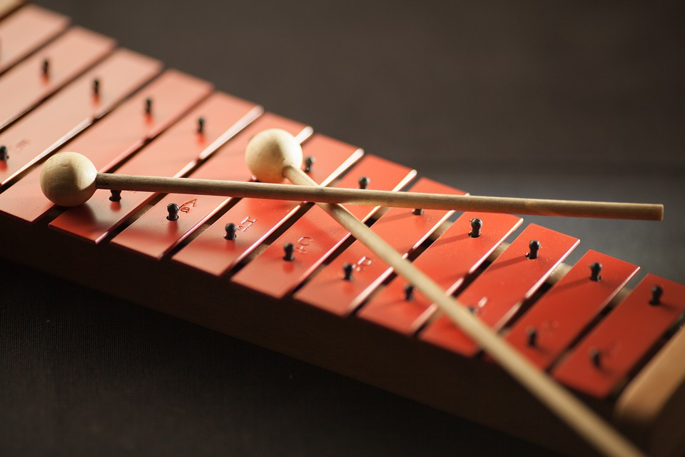

El xilófono (pronunciado /si'lofono/, del griego ξύλον xylon madera y φωνή phōnē voz) es un instrumento musical
de percusión. Cada lámina se afina según un tono específico (nota musical) de la escala cromática. Como se puede
afinar, se trata de un laminófono de sonido determinado. El orden de las láminas es similar al orden del teclado
de piano.
El xilófono utiliza tanto la técnica de tambor afinable como la avanzada de mazos. Tiene un timbre más vivo que
la marimba, y las notas se sostienen menos. Los xilófonos modernos incluyen láminas de percusión cortas. Un
xilófono con un registro más bajo que el registro de la marimba se llama xilorimba.
El instrumento tiene orígenes poco claros. Nettl propuso que se originó en el sudeste asiático y llegó a África
hacia el año 500 d. C., cuando un grupo de pueblos de habla malayo-polinesia emigró a África, y comparó las
orquestas de xilófonos de África oriental y las orquestas de gamelán javanés y balinés.
Esta teoría fue desafiada más recientemente por el etnomusicólogo y lingüista Roger Blench, quien postula un origen
independiente del xilófono en África, citando, entre las evidencias de la invención local, las características
distintivas de los xilófonos africanos y la mayor variedad de tipos de xilófonos e instrumentos similares al
xilófono en África.